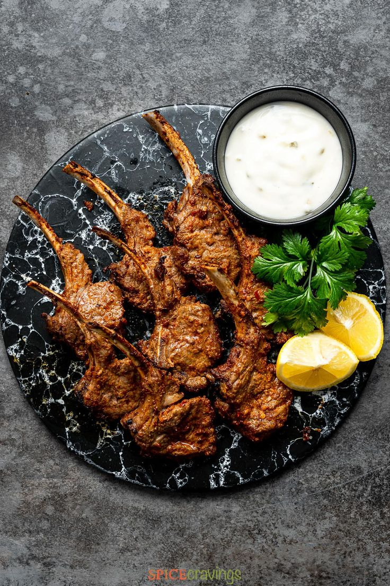
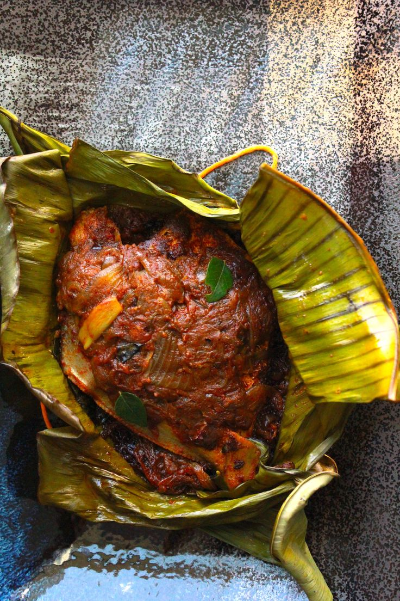
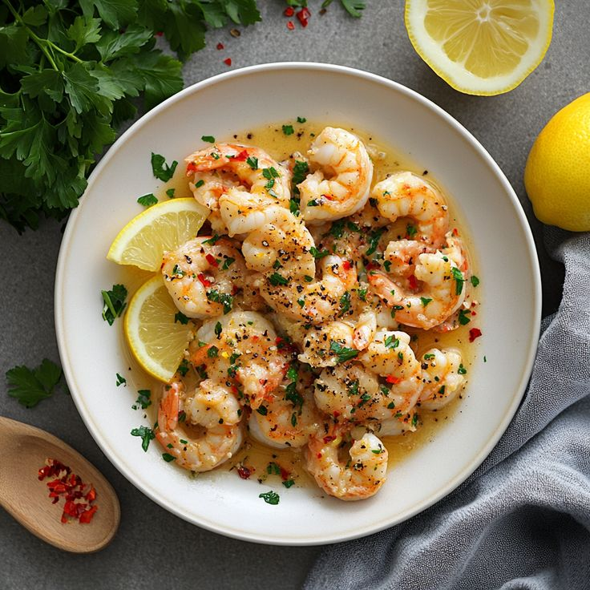
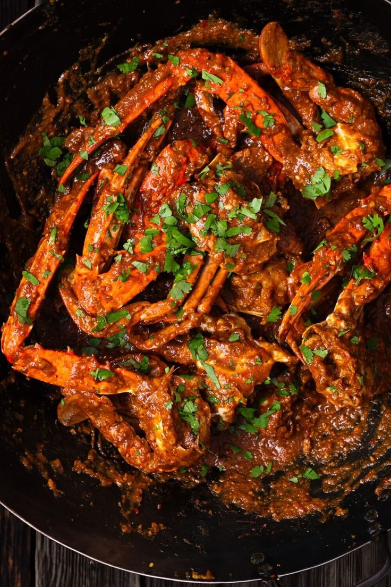
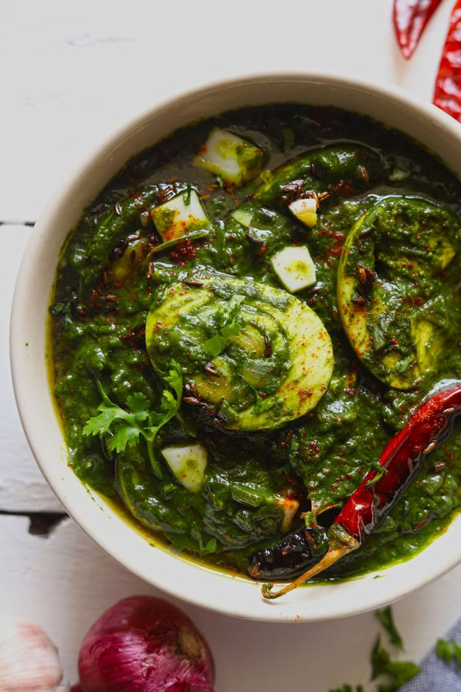

Kuku Paka
East African Coconut Chicken Curry is a creamy, spiced dish that's packed with flavor

Tandoori Lamp Chops
Tandoori lamb chops marinated in yoghurt and spices and grilled to perfection.

Meen Pollichathu
Kerala style fish preparation-lightly smeared with spices, wrapped in a banana leaf and steamed

Spicy Chilli Garlic Prawns
Tender prawns are sauteed in a rich blend of butter, garlic, and spices, then finished with a zesty lemon butter sauce. Perfect as an appetiser or served with crusty bread for a light meal.

Singapore Chilli Crab
Not as spicy as the name sounds, this dish is all about a flavour-packed savoury, yet a little sweet sauce.

Spinach Egg Gravy
Spinach Egg Curry is a healthy and tasty Indian main course dish with boiled eggs cooked in a creamy, green gravy.